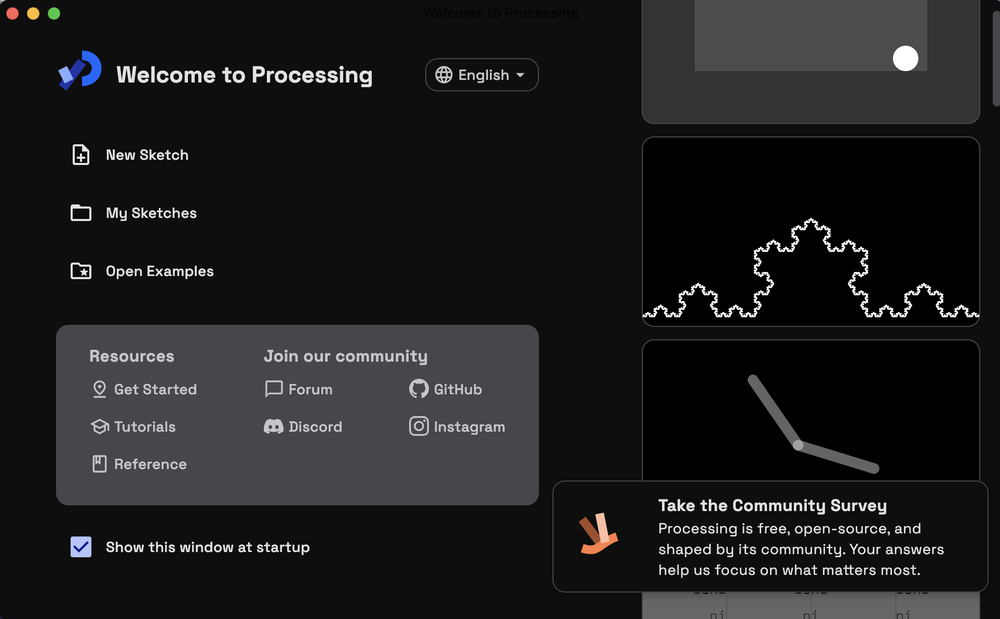
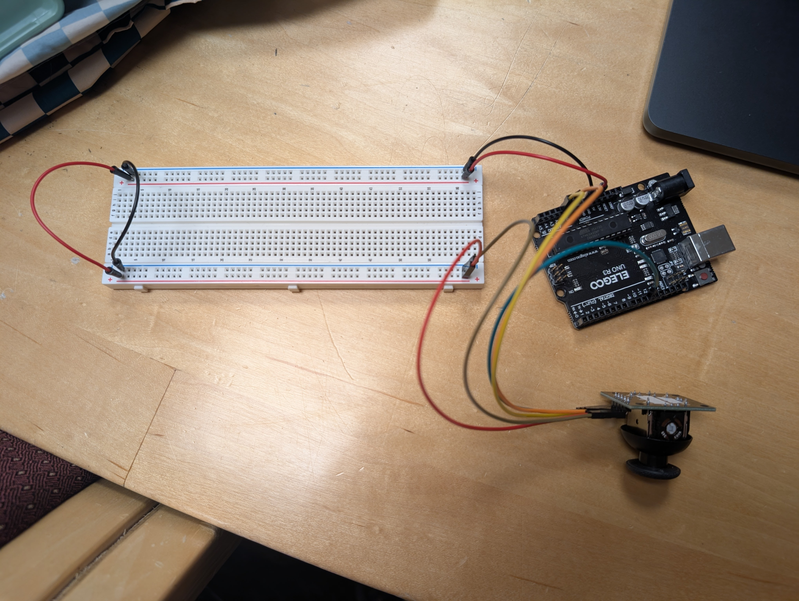
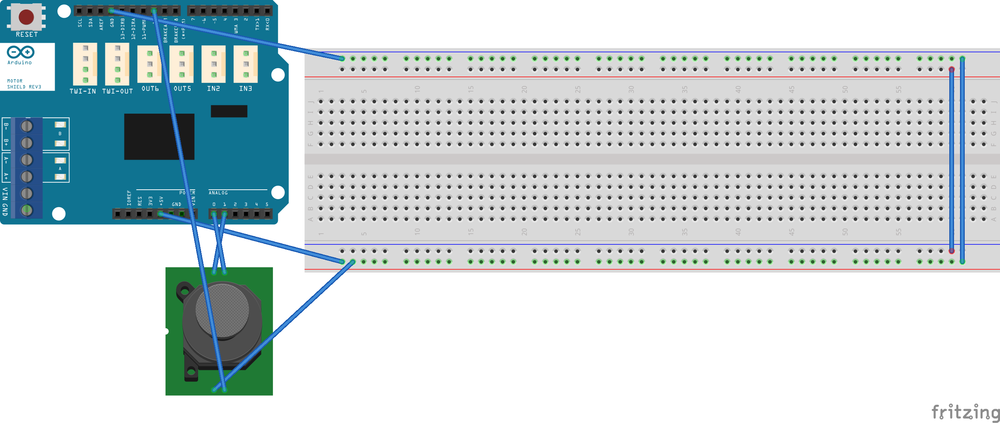

Lab 7: “Trust the Process-ing”
Materials Used
- Arduino (Elegoo) Uno R3 Controller Board
- USB Cable
- USB Adapter
- Breadboard Jumper Wire
- Joystick
- Multimeter
- Button
- Potentiometer
PART 0: Setting Up Processing
Downloaded Processing

PART 1: Creating With Processing
Upload a video or a screen capture of the part1 processing sketch running on the computer.
Change Ellipse Color & Size
Changed Code
PART 2: Processing With Arduino
Connect the joystick to the Arduino and upload a picture.

Fritzing Circuit Illustration

Video of serial output of joystick values.
Video of processing sketch with joystick input.
Part 3: Creating Your Own Visualization
Interactive Visualization
I was thinking about what different ways I could implement a button, a potentiometer and the joystick. I knew I wanted the button to turn the ellipse black, and that I wanted the joystick to move the ellipse around, but I wanted the potentiometer to be the opacity. I couldn't figure out how to get opacity to work so all of the variables labled as "opacity" in the code are affecting the size of the ellipse. All I did for the Arduino code is copy what I did with the joystick values. Then, I assigned the potentiometer to adjust the size while the button changes the color (just assigned the button the same value that the joystick button held before).